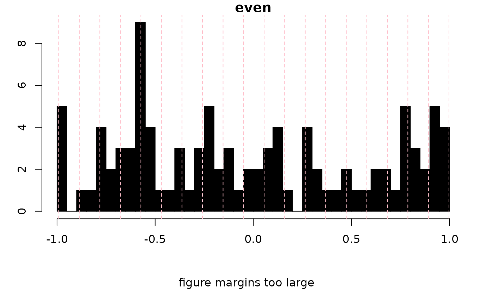
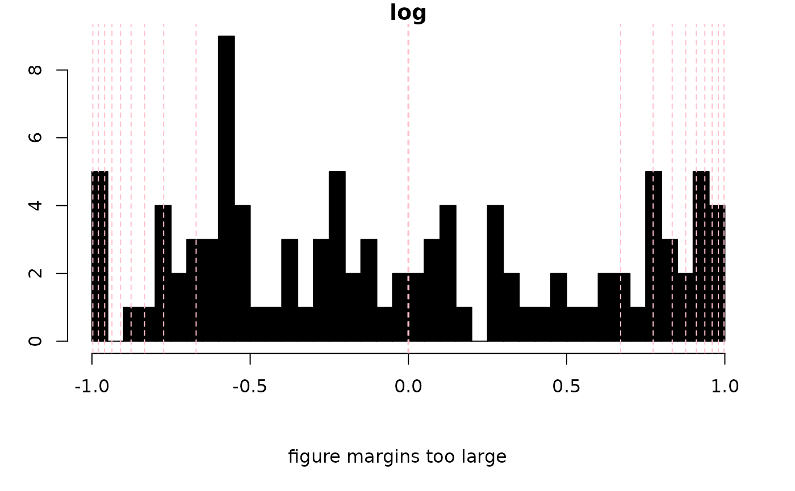
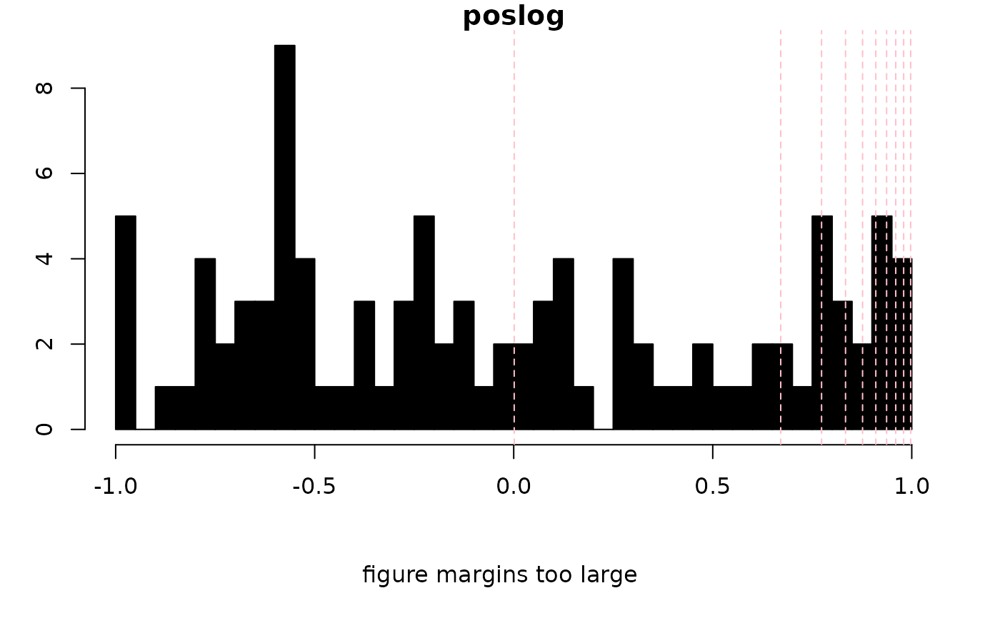
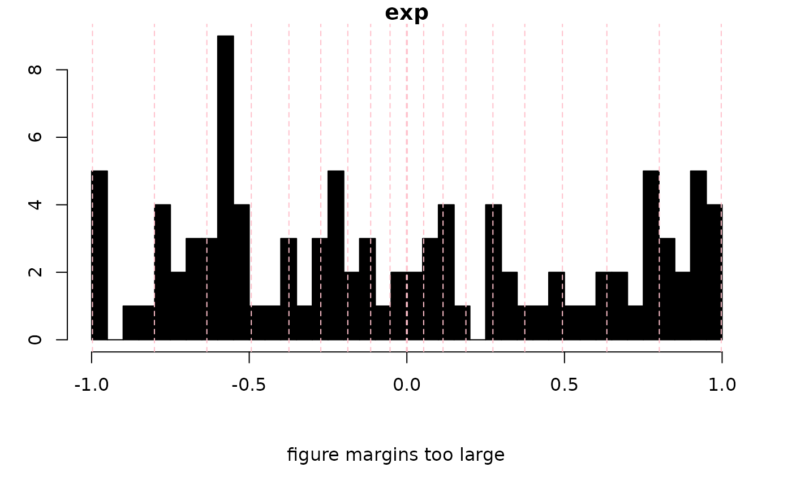

Given a matrix or vector input, this function will assist in selecting levels for preparing
contour and image type plots. For instance, levels can be spaced evenly,
logrithmically, exponentially or using a cumulative distribution function.
NA values are ignored.
calcLvls( M, n = 10, mode = "even", lambda = 1.5, base = 2, showHist = FALSE, ... )
| M | A numeric matrix or vector. |
|---|---|
| n | An integer giving the number of levels desired:
|
| mode | Character. One of |
| lambda | Numeric. A non-zero exponent used with |
| base | Integer. The base used with |
| showHist | Logical. Shall a histogram be drawn showing the location of the chosen levels? |
| ... | Arguments to be passed downstream. |
A numeric vector giving the levels.
Bryan A. Hanson, DePauw University. hanson@depauw.edu
set.seed(9) MM <- matrix(runif(100, -1, 1), nrow = 10) # test data tsts <- c("even", "log", "poslog", "exp", "posexp", "ecdf", "NMR") for (i in 1:length(tsts)) { nl <- 20 if (tsts[i] == "ecdf") nl <- seq(0.1, 0.9, 0.1) levels <- calcLvls( M = MM, n = nl, mode = tsts[i], showHist = TRUE, main = tsts[i] ) }